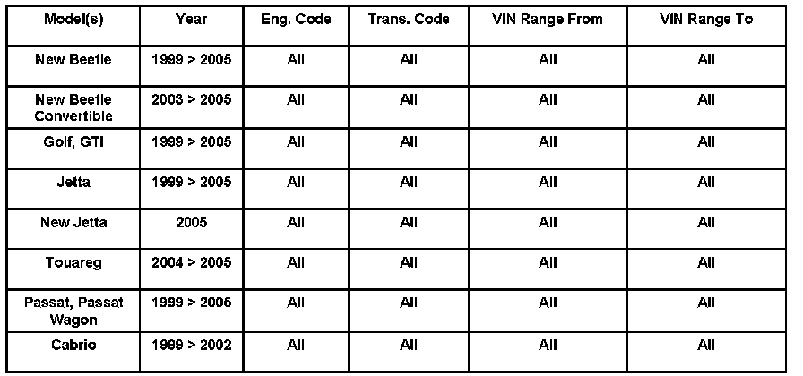
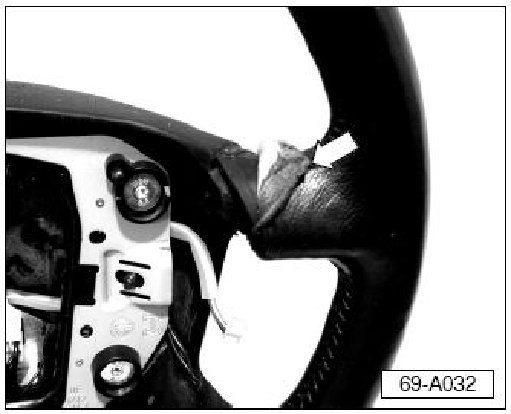
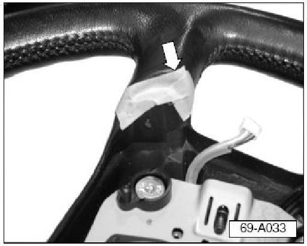
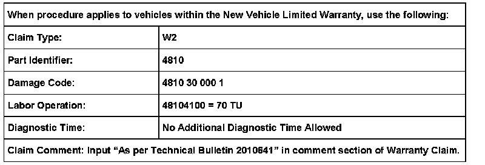
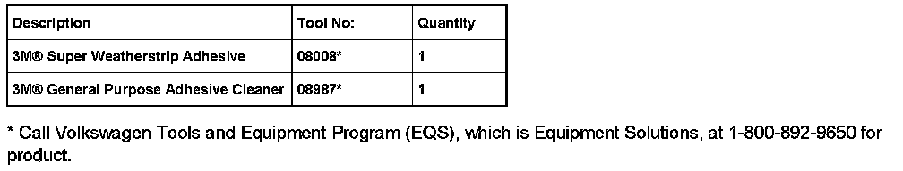

Interior - Steering Wheel Leather Wrap Coming Loose
ConditionSteering Wheel, Repairing Leather
Wrap Steering wheel leather wrap loose.

69 06 08 Nov.16, 2006, 2010641, Supersedes Technical Bulletin Group 69 number 04-04 dated October 19, 2004 due to inclusion into ElsaWeb.
Technical Background
Leather wrapping coming loose at inner spokes due to poor adhesion.
Production Solution
No production change required.
Service
For Golf, GTI, Jetta, New Jetta, New Beetle, New Beetle Convertible, Passat, Passat Wagon and Touareg vehicles:
- Remove steering wheel.See Repair Manual, Body Interior, Repair Group 69
For Cabrio vehicles:
- Remove steering wheel.See Repair Manual, Suspension, Wheels, Brakes, Steering, Repair Group 48.
- Cover portion of steering wheel not being serviced.
Perform the following procedure to one steering wheel spoke at a time.

- Gently pull back loose leather as far as possible -arrow-.
- Completely cover exposed substrate with a generous amount of 3M� Super Weatherstrip Adhesive (Part No.08008).
Tip: Do not allow adhesive to dry.
- Using firm pressure, roll leather back in place.
- Smooth leather until stress marks disappear.
- Work leather at edges until properly located and visually acceptable.

- Apply tape to hold edges of leather to steering wheel substrate -arrow-.
Leave tape on steering wheel for approx.30 minutes.
- Remove tape from steering wheel starting at tape end closest to the outer diameter of the steering wheel and pulling toward center of steering wheel.
- Use 3M(R) General Purpose Adhesive Cleaner (Part No.08987) to thoroughly clean leather wrap.
- Repeat procedure on additional steering wheel spokes, as necessary.
For Golf, GTI, Jetta, New Jetta, New Beetle, New Beetle Convertible, Passat, Passat Wagon and Touareg vehicles:
- Install steering wheel.See Repair Manual, Body Interior, Repair Group 69.
For Cabrio vehicles:
- Install steering wheel.See Repair Manual, Suspension, Wheels, Brakes, Steering, Repair Group 48.

Warranty

Required Parts and Tools